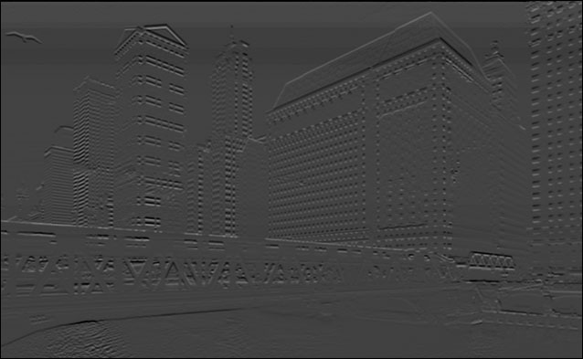

Assignment 3 - Edge Detection Using Sobel Operator
Grayscale Image
ED Using 3X3 Sobel Operator
ED Using 5X5 Sobel Operator
Horizontal Edge Detection

Vertical edge dection
ED Using Mangnitude Gradiant
Peak Detection using Threshold = 30